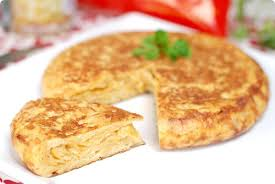

Tortilla de Papas

Ingredientes
- 1 kilo de papas
- 1/2 docena de huevos de campo
- 1/4 de cebolla
- Ajo a gusto
- Sal, pimienta y picante al gusto
Pasos para la preparación:
- Pelá las papás, cortas en cuadraditos, freilas. Dejalas reposar en papel absorvente
- Bati los huevos, agregale condimientos.
- 1Corta las cebollas, rehogalas con ajo.
- Con la papa tibia, mezcla todo!!!!
- Agregale sal, pimienta y picante al gusto
- Cocinar la mezcla en una sartén. Y, a probar la tortilla !!!
Ir a la página principal